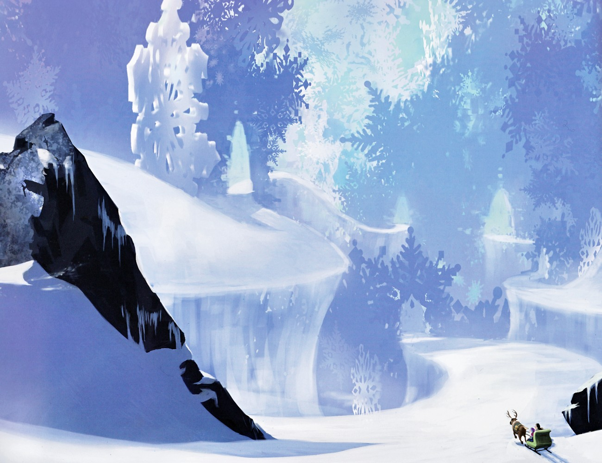
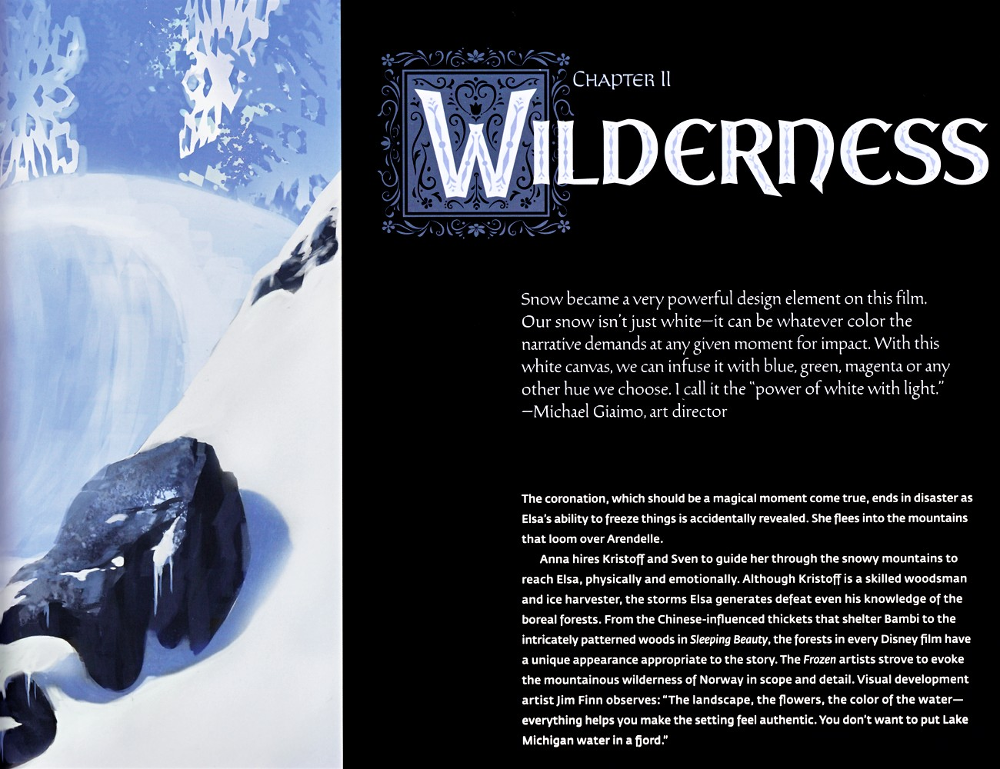
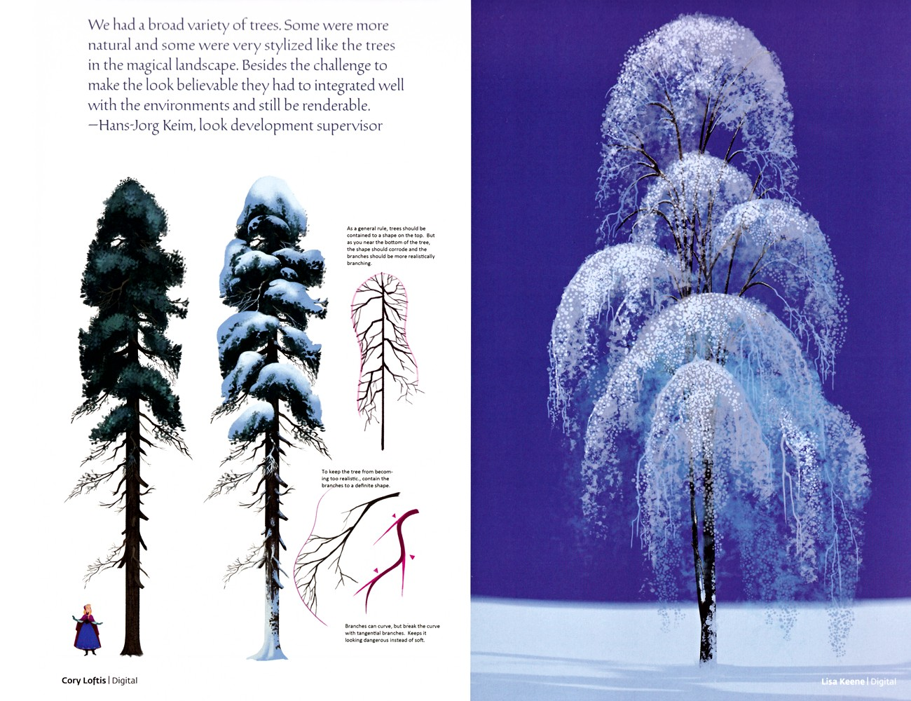

📖 设定集 · F1设定集
F1 图版 · 第二章 荒野
F1 官方设定集图版 · p077–p089
5
本卷页数
🎨
设定集
中/英
双语
🖼️ F1 官方设定集 · 原书图版
F1 图版 · 第二章 荒野
《The Art of Frozen》（Charles Solomon, Chronicle Books 2013） p077–p089
6
图版
p077–p089
原书页码
原书
扫描原图
笔记
逐页图注
🌲 第二章「The Wilderness（荒野）」的剩余页：雪原荒野概念图、北山夜色与姐妹旅途的环境画——「白色是一块画布」的野外篇章。
🏔️ 第二章 The Wilderness（p077–p089）

雪原荒野概念图
一幅宏大的风格化雪原冬景：蓝白色调的层叠冰崖与雪堤，淡青色雪花形树影衬于薰衣草色天空，右下角极小的驯鹿斯文拉着雪橇行进，被庞大景观反衬得微不足道。此页为从服装设计转入第二章"荒野"的视觉过渡。（F1设定集原页）

第二章 荒野
第二章"荒野"开篇。Giaimo 提出雪是强力设计元素——雪不只是白，可随叙事需要染上蓝、绿、品红等色，他称之为"白与光之力"。加冕本应成真却因艾莎冻物能力意外暴露而酿成灾难，艾莎逃入阿伦黛尔上方的群山；安娜雇克斯托夫与斯文穿越雪山上路。Finn 强调景观、花草、水色都要让环境真实，不能把密歇根湖水放进峡湾——艺术家力（F1设定集原页）

自然与魔法树木对比
左图为两棵写实雪松（绿色与覆雪），以安娜为比例参照，粉色注释线讲解"树冠收束成形状、近根部形状崩解、枝条切向破曲线以显危险感"等造型规则；右图为深紫背景中的魔法垂柳状蓝叶树。引言强调树木需兼具可信度与可渲染性。（F1设定集原页）

雪山山脊与发光冰塔
上方为带锐利黑岩峰的雕刻感雪山山脊，安娜与克里斯托夫（持杖）沿雪脊行走；右下为粉紫极光天空下的泛光冰塔。引言称雪是"白色画布"，雪景本就地色极弱，色彩全靠光照，团队视为可用光作画的空白画布。（F1设定集原页）

橡肯与漂流橡肯杂货店
左上为橡肯头像（彩色花纹毛衣），中为圆胖、红胡子、穿北欧花纹毛衣配吊带与靴裤的全身设定；右上为覆雪木屋群"漂流橡肯杂货店与桑拿室"（冒烟烟囱、松林、冰溪、柴堆）；右下为温暖杂乱的店内（干花、灯笼、货架、吧台、木桶、花纹地毯）。（F1设定集原页）

克里斯托夫与斯文滑冰·图形化设计语言
高度风格化的图形插画：克里斯托夫与斯文跑过冰湖，后方松林以薰衣草、蓝、桃色平涂分层剪影呈现，飘落雪花；前景与顶部有大幅黑色有机弧形（冰晶或风格化枝干）掠过画面。吉亚伊莫强调强烈的色彩与形状取向是构建本片设计语言的核心。（F1设定集原页）
💡 图注说明
本页全部图版为《The Art of Frozen》（Charles Solomon, Chronicle Books 2013）原书扫描（原图复制，未压缩），图注（中文标题 + 要点首句）逐页取自官方设定集中文笔记，点击图片可查看原尺寸扫描。
📌 本页要点
你正在阅读《设定集》卷的「F1 图版 · 第二章 荒野」。本页由电影正典、官方设定集与官方小说综合梳理，可作为该主题的速查入口；右侧目录可快速跳转到本页各小节。